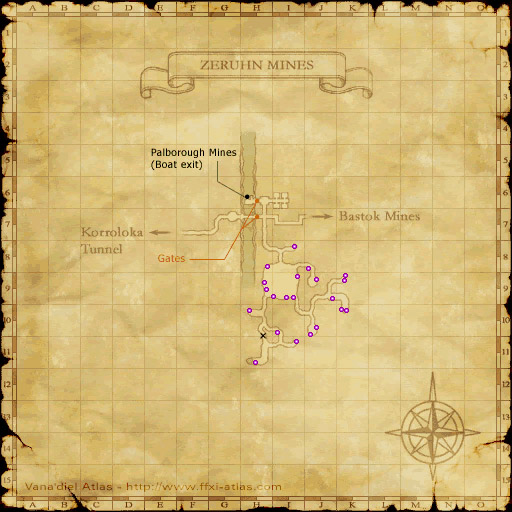

1-1. 체룬 광산 보고
The Zeruhn Report | ツェールン鉱山からの報告
♦ 미션 개요
광산구 서쪽에 위치한 체룬 광산의 감독관 마카림(Makarim)으로부터 보고서를 받아 대통령부의 나지(Naji)에게 전달한다.
♦ 기본 정보
시작 NPC | 바스톡 게이트 가드
권장 레벨 | 1 Lv
필요 아이템 | 없음
보상 | 랭크 포인트
반복 가능
바스톡 게이트 가드와 대화하여 미션을 받으세요.
Argus - 바스톡 항구 (Port Bastok/バストゥーク港) (L-7)
Cleades - 바스톡 상업구 (Bastok Markets/バストゥーク商業区) (D-11)
Malduc - 대공방 (Metalworks/大工房) (J-8)
Rashid - 바스톡 광산구 (Bastok Mines/バストゥーク鉱山区) (H-10)
Cleades - 바스톡 상업구 (Bastok Markets/バストゥーク商業区) (D-11)
Malduc - 대공방 (Metalworks/大工房) (J-8)
Rashid - 바스톡 광산구 (Bastok Mines/バストゥーク鉱山区) (H-10)

체룬 광산 지도 (클릭해서 크게 보기)
Zeruhn Mines/ツェールン鉱山 (H-11)의 Makarim과 대화하여 Zeruhn Report/報告書 를 받으세요.
Zeruhn Mines/ツェールン鉱山은 Bastok Mines/バストゥーク鉱山区 (D-7)에서 들어갈 수 있습니다.
바스톡으로 돌아와 Metalworks/大工房 (J-8)의 Naji에게 말을 걸어 Zeruhn Report/報告書를 전달하세요.
Naji는 President's Office/バストゥーク大統領府의 입구 쪽에 있습니다.
Zeruhn Report/報告書를 확인했는지 여부에 따라 컷씬에서 Lucius의 대사가 달라집니다.